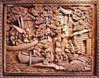

Валаам — остров в северной части Ладожского озера, самый большой в составе
Валаамского архипелага. На острове расположен посёлок Валаам,
входящий в Сортавальское городское поселение, и Валаамский
ставропигиальный мужской монастырь, являющийся памятником русского зодчества.
Название острова, возможно, происходит от финно-угорского
слова «валамо» — высокая (горная) земля.
Остров неоднократно посещали императоры Александр I и Александр II,
другие члены императорской фамилии. Также приезжал на Валаам святитель Игнатий (Брянчанинов).
Природа Валаама вдохновляла известнейших гениев творчества и науки.
Здесь побывали художники И.И. Шишкин, Ф.А. Васильев, А.И. Куинджи,
писатели и поэты Н.С. Лесков, Ф.И. Тютчев,
А.Н. Апухтин, И.С. Шмелёв, Б.К. Зайцев,
композиторы П.И. Чайковский, А.К. Глазунов,
учёные М.Н. Миклухо-Маклай, Д.И. Менделеев и множество
других. В XIX веке во время своего
путешествия по России остров посетил Александр Дюма-отец.
Хорошо известны валаамские пейзажи, написанные И.И. Шишкиным
(«Вид Валаама», 1860), А.И. Куинджи («На острове Валаам», 1873)
и Николаем Рерихом («Святой остров», 1917). Ряд современных
художников, в частности, известный петрозаводский график
А.И. Авдышев, в 1970-х годах создал серию чёрно-белых линогравюр.
Приезжал на Валаам и посвящал ему свои работы мастер объёмной
резьбы по дереву, сортавальский художник Кронид Гоголев.

К.Гоголев. «На пристани» (резьба по дереву)
Свернуть